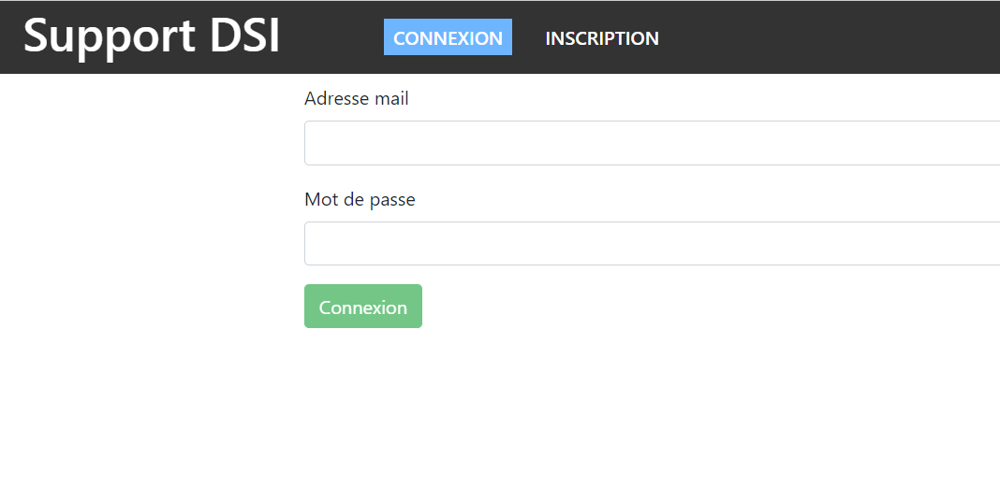

Projets
- Création et administration d'un serveur de jeu
Depuis la 4ème, je me suis formé à l'administration de serveurs de jeu en autodidacte. Cela m'a permis de comprendre les enjeux de la cybersécurité et de développer mes compétences en administration de serveurs.

- Création d'une application WEB
Dans le cadre du projet SAE, j'ai développé une application web avec MongoDB et JavaScript pour une entreprise, facilitant le service et le dépannage des utilisateurs à travers la gestion de tickets.
 - Jeu de mémoire en PHP
J'ai créé un jeu de mémoire en PHP où les joueurs doivent associer des paires de cartes cachées. Ce projet m'a permis d'améliorer mes compétences en développement web.

- Création de réseau (Projet intégratif)
Avec mon groupe, nous avons créé un réseau complet pour une entreprise fictive, en répondant à ses besoins matériels et logiciels. Ce projet nous a permis de monter en compétences dans de nombreux domaines techniques.